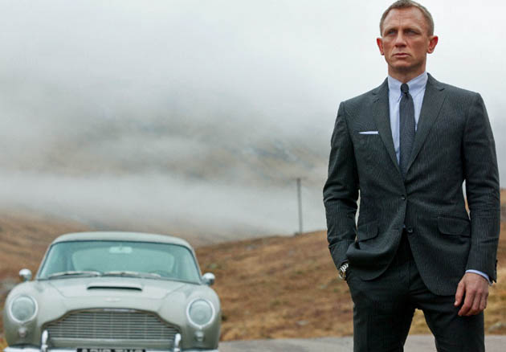
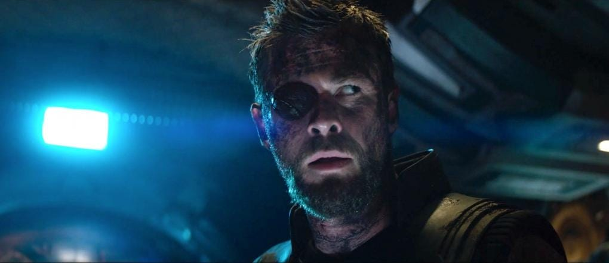
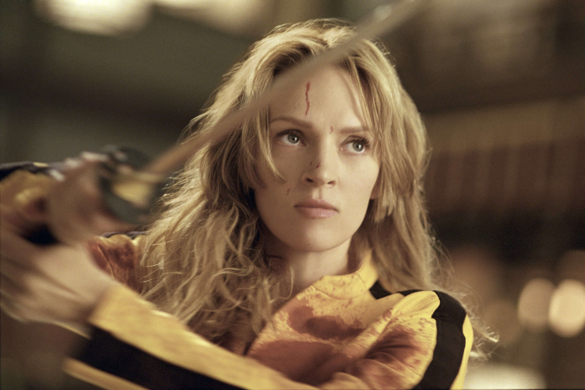

Filmele de actiune
Descriere
Filmul de acțiune este un gen cinematografic caracterizat prin accentul pus pe secvențele spectaculoase, uneori stereotipice (urmăriri de mașini, schimb de focuri, explozii,etc), în detrimentul poveștii sau evoluției personajelor. Conflictul este de cele mai multe ori rezolvat în manieră violentă, cu moartea personajelor negative.
Aceste filme urmaresc, in general, un erou care este pus impotriva unor situatii incredibile care ii pun viata in pericol, el fiind in dezavantaj total, dar in final reusind sa castige.
Evolutia tehnologiei CGI a facut mai usor si mai ieftin producerea unor secvente de actiune si efecte vizuale.
Poze:

Daniel Craig in "Skyfall"

Chris Hemsworth in "Infinity War"

Uma Thurman in "Kill Bill"